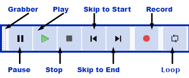

Transport Toolbar
Transport Toolbar has buttons for controlling playback, recording and for moving to the project start or end. The buttons can also be controlled with keyboard shortcuts.
- Click on the toolbar image below to see this toolbar displayed in context of the default upper tooldock layout.
- 
 Pause , or P
Pause , or P
Click Pause to temporarily pause playing or recording without losing your place. Click Pause a second time to resume.
You can also click Pause before clicking Record, then click Pause again to start recording. On some systems or devices, "arming" recording in this way with the stream already open might start recording more quickly.
Play or Space
- Play: playback begins wherever the editing cursor is. Otherwise, if an area of track is selected, only that selection will be played.
- Loop Play: play the track or selection over and over until you stop. Hold down Shift while clicking . This causes the button image to change to Loop Play .
- You can use the Shift + Space shortcut to start Loop Play instead.
- Play Cut Preview: play audio either side of a selection to preview what deleting the selection will sound like. Hold down Ctrl (⌘ on Mac) while clicking .
- Alternatively you can use the C shortcut to preview the cut. This also causes the Play button image to change to Play Cut Preview.
| You can press when there is already playback or when playback is paused to restart playback immediately from the editing cursor or selection. |
 Stop , or Space
Stop , or Space
Stops playing or recording immediately, and releases Pause if depressed. You must stop playback or recording before you can use the "Skip" buttons below.
| Use (or its shortcut X) to stop and set the cursor at the stop point. |
Skip to Start or Home
Move the cursor to the beginning of the project. This is useful if you want to play everything, or record a new track starting from the beginning.
| Holding down Shift while clicking extends a selection region from the cursor position or current selection region to the start of the project. |
Skip to End or End
Move the cursor to the end of the project.
| Holding down Shift while clicking similarly extends a selection region to the end of the project. |
Record or R
- Record: Clicking Record or using the R shortcut always begins recording at the end of the currently selected track(s).
 Record New Track: Hold down Shift while clicking Record, or use its shortcut Shift + R, to start recording in a new track at either the current cursor position or at the beginning of the current selection.
Record New Track: Hold down Shift while clicking Record, or use its shortcut Shift + R, to start recording in a new track at either the current cursor position or at the beginning of the current selection.
| Any users who had the CleanSpeech customized interface enabled in 1.3.13 or earlier 1.3 versions of Audacity will find that Transport Toolbar has an empty space which previously contained the CleanSpeech button. This space can be removed by choosing |